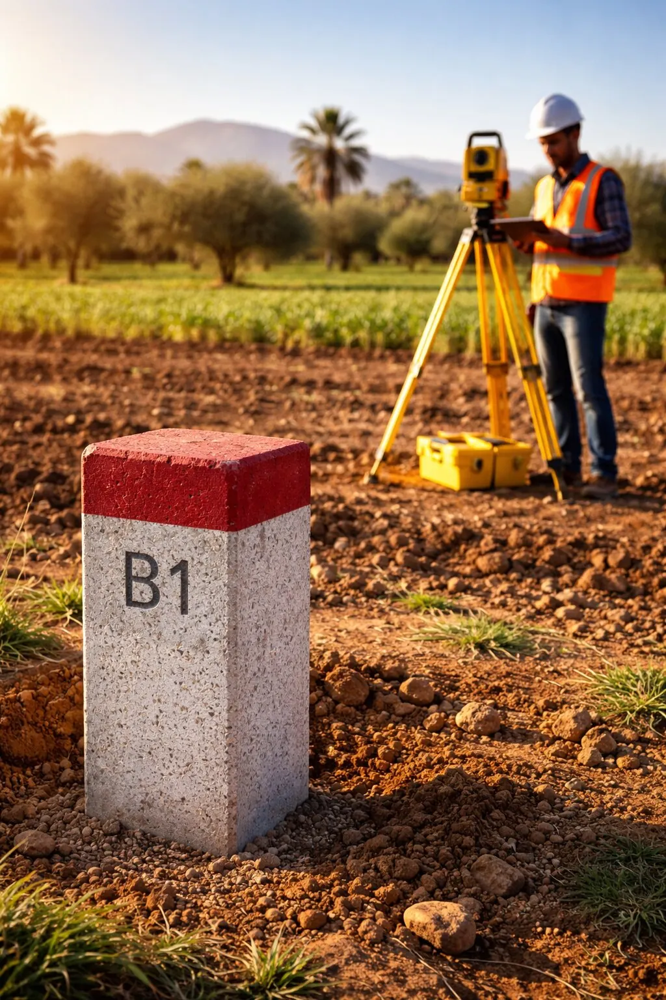
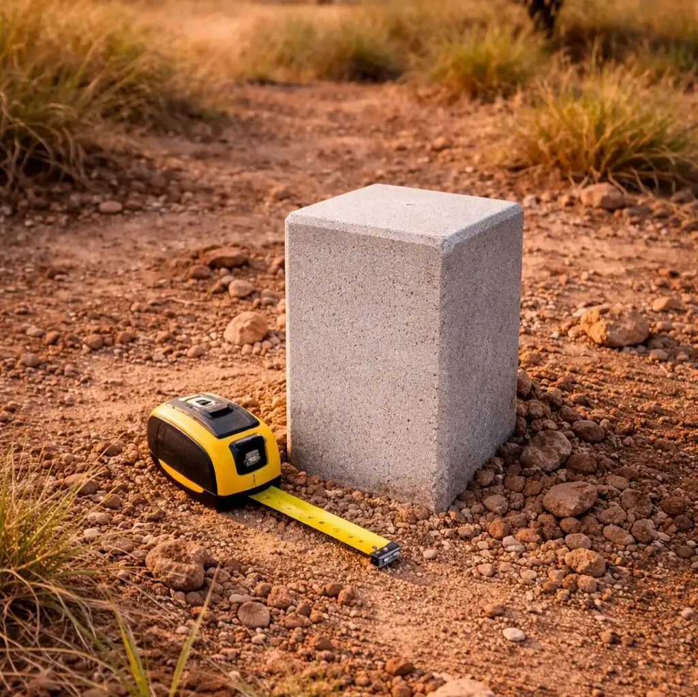

أسوار مُزاحة، منشآت تتعدى على قطعة الجار، مساحات لا تتطابق مع رسم الملكية… النزاعات العقارية المتعلقة بحدود الملكية شائعة في المغرب. وأفضل طريقة للوقاية منها — أو لحلها — هي عملية تحديد الحدود (البورناج).

ما هو تحديد الحدود؟
تحديد الحدود هو العملية التي يقوم بها مهندس مساح طبوغرافي معتمد لتحديد وتجسيد الحدود الدقيقة لعقار ما على أرض الواقع، وفق بيانات رسم الملكية والعقود المسجلة لدى الوكالة الوطنية للمحافظة العقارية.
عمليًا، تشمل هذه العملية:
- استرداد الإحداثيات الرسمية لزوايا القطعة
- وضع علامات حدودية (إسمنتية أو معدنية) فيزيائيًا عند نقاط الحدود
- تحرير محضر تحديد حدود موقَّع من المهندس المساح ومن أصحاب العقارات المجاورة في الأفضل
- يُشكّل محضر تحديد الحدود مرجعًا تقنيًا ووثائقيًا متينًا معترفًا به من قِبَل الوكالة الوطنية للمحافظة العقارية.
- إزالة أو تحريك أي علامة حدودية بعد التحديد الرسمي قد يُرتّب مسؤولية على من قام بذلك.
- في حالة النزاع، يُعدّ تحديد الحدود عمومًا أكثر الأدلة موثوقيةً لإثبات حدود الملكية.
- يُيسّر أي تحديث لرسم الملكية لدى الوكالة الوطنية للمحافظة العقارية.
متى يُنصح بتحديد الحدود؟

علامة حدودية إسمنتية — حد الملكية الرسمي
- قبل شراء أرض: التحقق من أن المساحة الفعلية تطابق المُعلَن عنها
- قبل البناء: التأكد من أن الأساسات تحترم الحدود القانونية
- في حالة نزاع مع جار: تجسيد الحدود لتجنب دعوى قضائية طويلة ومكلفة
- عند الإرث أو الهبة: تحديد كل حصة بدقة
- قبل التجزئة: تحديد الحدود خطوة إلزامية في ملف التجزئة
- عند تحديث مساحي لدى الوكالة الوطنية للمحافظة العقارية
كيف تسير عملية تحديد الحدود؟
-
الاطلاع على رسم الملكية والمخطط المساحي
يطّلع المهندس على الوثائق الرسمية للوكالة الوطنية للمحافظة العقارية للحصول على الإحداثيات القانونية لحدود القطعة. إذا كان رسم الملكية قديمًا، قد يستلزم الأمر البحث في الأرشيف.
-
استدعاء أصحاب العقارات المجاورة
في تحديد الحدود التوافقي (الأكثر شيوعًا)، يُستدعى أصحاب القطع المجاورة لحضور العملية. توقيعهم يُعزّز قيمة التحديد.
-
وضع العلامات الحدودية على أرض الواقع
بفضل أجهزة GPS GNSS والمحطة الشاملة، يحسب المهندس ويُجسّد نقاط الحدود بدقة سنتيمترية. تُوضع العلامات وتُرقَّم وفق معايير الوكالة الوطنية للمحافظة العقارية.
-
تحرير المحضر والتوقيع عليه
يصف محضر تحديد الحدود الحدودَ والعلاماتِ الموضوعة والمساحاتِ المحسوبة. يُوقّعه المهندس المساح والأطراف الحاضرة في الأفضل. يُعدّ هذا الوثيقةَ المرجعية الأساسية في الملف.
-
تسليم الملف الكامل
يتسلّم العميل مخطط تحديد الحدود (ورقي + DWG/PDF) والمحضر وجدول إحداثيات العلامات. يمكن إدراج هذه الوثائق مباشرةً في ملف الوكالة الوطنية للمحافظة العقارية.
تحديد حدود توافقي أم قضائي؟
- تحديد الحدود التوافقي: تتفق جميع الأطراف على الحدود. هو الإجراء الأسرع والأقل تكلفةً، يجريه مهندس مساح يُعيَّن بالتراضي.
- تحديد الحدود القضائي: عند استمرار الخلاف، يمكن لأحد الأطراف اللجوء إلى المحكمة العقارية المختصة، التي تعيّن خبيرًا مساحًا لإجراء التحديد. يتدخل STOPSIT بانتظام بصفة خبير قضائي.
سياج من الأسلاك الشائكة، أو جدار فاصل، أو حجارة وضعها جار لا تُمثّل حدودًا رسمية للملكية. العلامات الحدودية التي يضعها مهندس مساح طبوغرافي معتمد والواردة في محضر رسمي هي وحدها التي تحمل قيمةً تقنية معترفًا بها ويمكن الاستناد إليها في حالة النزاع.
ما هي تكلفة تحديد الحدود في المغرب؟
- عدد العلامات الواجب وضعها (مرتبط بمحيط القطعة)
- موقع الأرض (حضري، شبه حضري، أو قروي)
- تعقيد البحث الوثائقي (قِدَم رسم الملكية، الأرشيفات)
- حضور أصحاب العقارات المجاورة من عدمه
يُقدّم STOPSIT عرض سعر مجاني خلال 24 ساعة. تواصل معنا مع المساحة التقريبية وموقع الأرض.
خلاصة
تحديد الحدود استثمار بسيط مقارنةً بتكلفة نزاع عقاري. إذا أجراه محترف معتمد، فإنه يحمي ممتلكاتك على المدى البعيد ويمنحك أساسًا متينًا لحدود ملكيتك.
يتدخل STOPSIT لعمليات تحديد الحدود في القنيطرة والرباط وسيدي سليمان والفقيه بن صالح وعموم المغرب منذ أكثر من 20 عامًا.